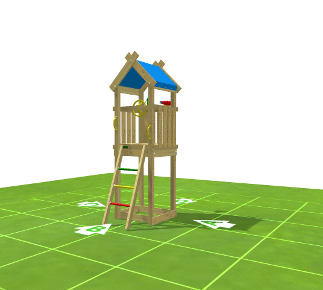

Welcome to My Jungle Gym configurator!
With this configurator, you can create the perfect climbing frame for your backyard.
Step 1: Choose your base tower & roof type.
Step 1: Choose your base tower & roof type.
